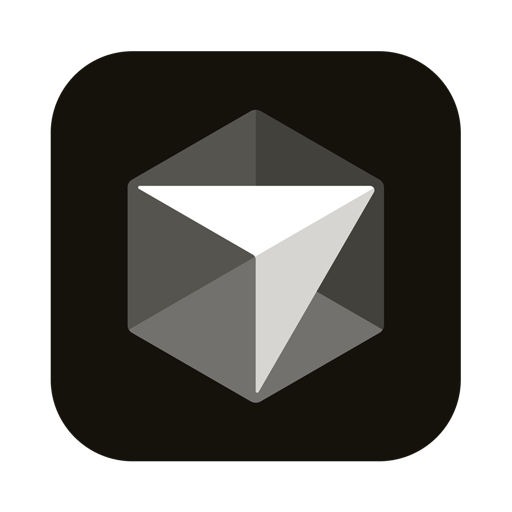

Already investigating.
When you join.
Pick up the evidence and open leads.
AI-NATIVE INCIDENT RESPONSE
On-call, AI-led resolution and postmortems in one platform. Meld diagnoses and fixes outages; your engineers and their agents join when needed.
Early access · 20-minute demo for on-call teams
Requests are failing. Meld starts investigating.
Testing two leads: traffic spike or leaked slots.
Meld updates the diagnosis: slot leak.
Release the slot. Verify fresh requests.
Meld adds the missing cleanup so failed requests don’t exhaust capacity.
if capacity.acquire(timeout=0.2):
try:
return handle_checkout()
except CheckoutError:
return service_unavailable()
+ finally:
+ capacity.release()
Illustrative product workflow and example data · deployment flow shows the product direction.
Pick up the evidence and open leads.
A finding from any responder can change the diagnosis.

CursorYour agent works within the access you delegate.
Meld drafts the postmortem and follow-ups from the incident record.
An incident response platform with its own AI investigator. It brings on-call, investigation, resolution and postmortems into one workflow. Engineers and their agents join when needed.
No. Meld investigates independently. Responders can join with their own agents when their expertise or access is needed.
Your team controls the resources, permitted actions and approvals. Responders delegate access to their agents for an incident session, with an expiry.
Meld drafts a postmortem from the investigation, with follow-ups for the team to review. The evidence and decisions stay available for future incidents.
Start with a 20-minute demo. We’ll agree on the services, integrations and access for a design partner pilot before connecting your environment.
Built by Sricharan S Ravi and Vidit Jain.
Experience in production infrastructure and enterprise AI agents.